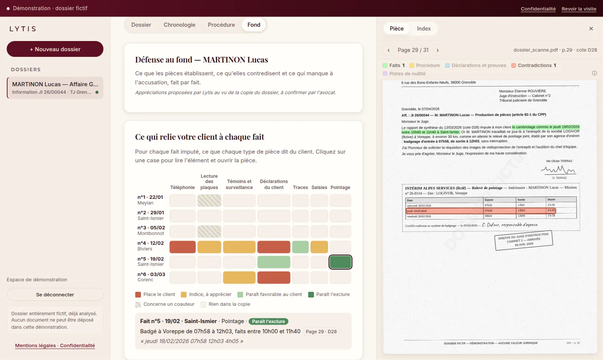
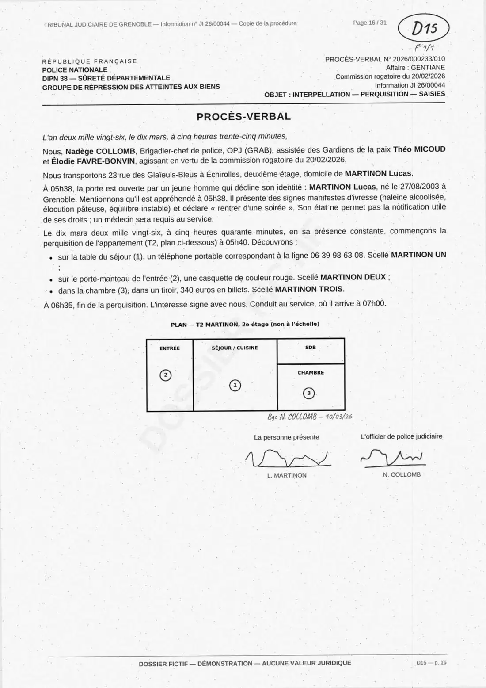
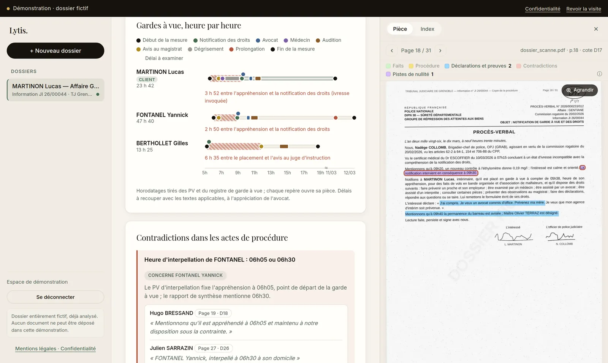
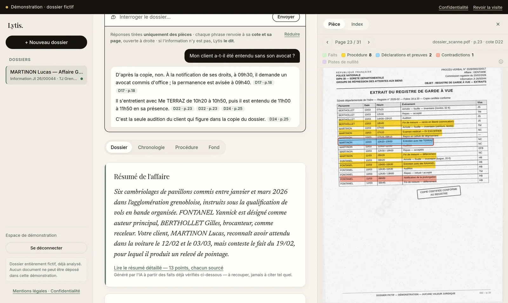

Des centaines de pages
Procès-verbaux, réquisitions, expertises, souvent scannés et dans le désordre des cotes. Leur seule lecture prend des jours.
L'IA d'analyse des dossiers pénaux
Lytis lit la copie de votre dossier et vous restitue une analyse structurée : chronologie des faits, nullités possibles, éléments à charge et à décharge. Chaque élément renvoie à sa cote et à sa page.

Le constat
Procès-verbaux, réquisitions, expertises, souvent scannés et dans le désordre des cotes. Leur seule lecture prend des jours.
Une heure qui ne concorde pas, une autorisation absente, une plaque mal relevée : l'élément décisif tient parfois en une ligne.
Les nullités se soulèvent dans des délais stricts. Chaque jour passé à dépouiller est un jour de moins pour construire la défense.
Avant, après
Faites glisser le curseur sur la page 16 du dossier fictif.

D15 · p. 16 Interpellation et perquisition
Recoupé avec le témoignage de CHABERT D2 · p. 3
Démonstration
Un dossier fictif de 31 pages, le même que dans la démonstration. De la copie brute à la source vérifiée, en six étapes.
PDF scannés, pièces dans le désordre : Lytis prend la copie de la procédure comme vous la recevez.
Faits, actes de procédure, déclarations : chaque passage utile est repéré, y compris dans les pièces scannées.
27 faits datés, remis dans l'ordre, chacun avec sa cote et sa page.
Triées selon ce que votre client paraît pouvoir invoquer. L'appréciation reste la vôtre.
Ce qui relie votre client à chaque fait, et ce qui l'en éloigne, citations à l'appui.
Chaque élément renvoie à l'extrait exact de la pièce. Un clic, et vous vérifiez.
Choisissez un élément
D15 · p. 16 — Interpellation et perquisition
Citation retrouvée mot pour mot dans la pièce
Dossier entièrement fictif. Aucune donnée réelle.
Et dans chaque dossier
Placement, notification des droits, avocat, médecin, auditions, avis au magistrat : la mesure reconstituée sur une ligne de temps, les délais à examiner mis en évidence.

Pour chaque fait imputé, ce que dit chaque type de pièce : téléphonie, témoins, déclarations, traces, pointage. Les charges solides et les faits sans rattachement apparaissent d'un coup d'œil.
Posez une question, Lytis répond à partir des seules pièces du dossier, chaque phrase sourcée. Si l'information n'y figure pas, il le dit.

Méthode
Les PDF de la procédure, tels que vous les recevez, y compris les pièces scannées.
Défense d'un mis en cause, partie civile ou lecture neutre : l'analyse s'oriente vers ce qui compte pour lui.
Chronologie, procédure, fond, note de travail et dossier surligné, prêts à exploiter et à vérifier.
Confiance
L'analyse repose sur les modèles de Mistral AI, entreprise française d'intelligence artificielle.
Les pièces et les analyses de vos dossiers sont hébergées en Europe.
Chaque dossier n'est accessible qu'au compte qui l'a déposé. Sa suppression efface les pièces comme les analyses.
Lytis relève, rapproche et propose, toujours avec la source. La qualification et la stratégie de défense restent celles de l'avocat.
Tarifs
Lytis est en phase pilote. Les tarifs seront annoncés à l'ouverture ; d'ici là, découvrez l'outil et rejoignez les cabinets qui le façonnent.
Découverte
Libre accès
Un dossier pénal fictif, entièrement analysé, à parcourir sans inscription.
Places limitées
Programme pilote
Conditions préférentielles
Pour les pénalistes qui veulent utiliser Lytis sur leurs dossiers dès maintenant.
Cabinet
Bientôt disponible
L'offre pour les avocats et les cabinets, à l'ouverture de Lytis.
Nous contacter
Lytis est en cours de développement avec des avocats pénalistes. Rejoignez le programme pilote pour l'utiliser sur vos dossiers et orienter les prochaines fonctionnalités.
Le fondateur
Profil LinkedInQuestions fréquentes
Non. Lytis prépare le terrain : il structure le dossier, relève ce qui mérite d'être examiné et vous amène à la bonne page. La lecture critique, l'appréciation et la stratégie restent celles de l'avocat.
Chaque élément affiché est accompagné de sa cote, de sa page et de la citation exacte. Un clic ouvre la pièce, passage surligné : la vérification prend quelques secondes.
L'analyse est réalisée par Mistral AI et les données sont hébergées en Europe. Chaque dossier n'est accessible qu'au compte qui l'a déposé, et sa suppression efface les pièces comme les analyses.
La copie de la procédure au format PDF, en un ou plusieurs fichiers, y compris lorsque les pièces sont scannées.
Les tarifs seront annoncés à l'ouverture. Pendant la phase pilote, les cabinets participants bénéficient de conditions préférentielles : laissez-nous vos coordonnées pour être informé en priorité.